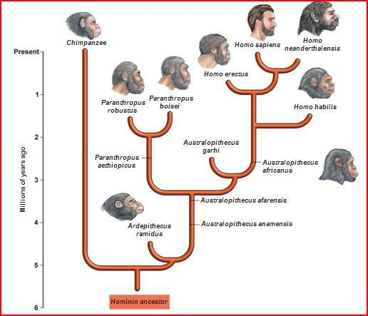

Human Evolution
Callout
Human Biological Characteristics
Biological characteristics are common components of how humans socially define races; human populations display variation in features such as stature, hair, and skin color, which corresponds with environmental conditions.
Human success can be attributed in large part to our ability to perform complex reasoning, coupled with an exceptional ability to learn, make, and use sophisticated tools, and to communicate using complex language.
.jpg)
What are your characteristics and abilities that you think are distinct from the others?
Give three.
Callout
Human Phylogeny
The most widely used taxonomic system was formalized by Carolus Linnaeus and comprises a simple nested hierarchy wherein similar organisms group together at one taxonomic rank, and those groups cluster into successively broader groups at higher ranks. The next slide shows a taxonomy of human ancestors and their extant African ape relatives.

Homo sapiens are primates. Primates are a relatively small group of mammals characterized by large brains relative to body size, forward-directed eyes, flexible hands and feet, and arms that can rotate fully.
Callout

The Hominid Fossil Record

Hominid fossils record information about the sequence of steps in the evolution of humans. Fossils of hip bones, feet, leg bones, and footsteps provide information about whether or not a species walked upright.
Accordion
Cultural evolution
The first biologists to compare human and chimpanzee DNA were so struck by their similarity that they joked that perhaps the only differences between humans and chimpanzees were cultural. Like humans, chimpanzees engage in some ritualized behaviors and use symbolic gestures to communicate.
Evidence suggests that from the time of our common ancestor with the chimpanzee, our ancestors lived as hunter–gatherers for more than 300 000 generations.
Cultural evolution influences biological evolution
Biological and cultural evolution have certain similarities but also many dissimilarities. Both are based on variation, heredity and selection, but how these appear and work differ.
An interesting example of how cultural evolution influences biological evolution is evident in the recent evolution of lactose tolerance.
Lactose tolerance evolved as human populations began to domesticate goats, cattle, and camels, and consume their milk. In these populations natural selection favored those rare individuals who were more capable of digesting lactose.
In fact, the very rapid changes in human culture over the past 10 000 years have actually sped up human evolution.